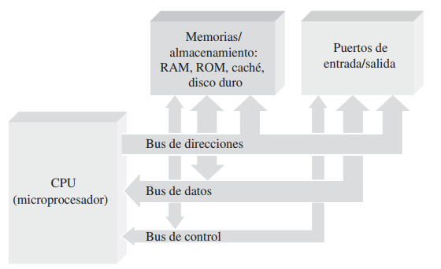
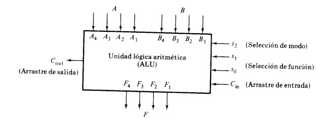

Hay computadoras de propósito especial que permiten controlar diversas funciones en los automóviles o electrodomésticos, controlar procesos de fabricación en las fábricas, proporcionar juegos con propó- sitos de entretenimiento o actuar como control de sistemas de navegación tales como GPS (Global Position System, sistema de posicionamiento global) por nombrar sólo unas cuantas áreas. Sin embargo, el tipo de computadora más familiar es la computadora de propósito general que puede programarse para realizar numerosas tareas distintas.
La CPU (Central Processing Unit, unidad central de proceso o UCP) es el “cerebro” de la computadora y se encarga de controlar todo lo que la computadora hace. La CPU es un microprocesador con una serie de circuitos asociados que controla los programas software de la computadora. Básicamente, la CPU obtiene (extrae) cada instrucción de programa de la memoria y lleva a cabo (ejecuta) dicha instrucción.
Después de completar una instrucción, la CPU pasa a la siguiente y en la mayoría de los casos, puede operar con más de una instrucción al mismo tiempo. Este proceso de “extracción y ejecución” se repite hasta que se han ejecutado todas las instrucciones de un programa específico. Por ejemplo, un programa de aplicación puede requerir que se sumen una serie de números. Las instrucciones para sumar los números estarán almacenadas en forma de códigos binarios que indican a la CPU que debe extraer una serie de números de la memoria, sumarlos y volver a almacenar el resultado en la memoria.
El microprocesador es un circuito integrado digital que puede programarse con una serie de instrucciones para que realice diversas operaciones con los datos. Un microprocesador es la CPU de una computadora. Puede llevar a cabo operaciones aritméticas y lógicas, desplazar datos de un lugar a otro y tomar decisiones basándose en ciertas instrucciones.
Podemos pensar en un bus como en una especie de camino para las señales digitales que está compuesto de un conjunto de conexiones físicas y que posee una serie de especificaciones eléctricas relativas a esas señales. Los bloques funcionales se conectan entre sí mediante tres buses internos: de dirección, de datos y de control.
Este es un bus unidireccional debido a que la información fluye es una sola dirección, de la CPU a la memoria ó a los elementos de entrada y salida. La CPU sola puede colocar niveles lógicos en las n líneas de dirección, con la cual se genera 2n posibles direcciones diferentes. Cada una de estas direcciones corresponde a una localidad de la memoria ó dispositivo de E / S. Los microprocesadores 8086 y 8088 usados en los primeros computadores personales (PC) podían direccionar hasta 1 megabyte de memoria (1.048.576 bytes). Es necesario contar con 20 líneas de dirección. Para poder manejar más de 1 megabyte de memoria , en los computadores AT (con procesadores 80286) se utilizó un bus de direcciones de 24 bits, permitiendo así direccionar hasta 16 MB de memoria RAM (16.777.216 bytes). En la actualidad los procesadores 80386DX pueden direccionar directamente 4 gigabytes de memoria principal y el procesador 80486DX hasta 64 GB.
Este es un bus bidireccional, pues los datos pueden fluir hacia ó desde la CPU. Los m terminales de la CPU, de D0 - Dm-1 , pueden ser entradas ó salidas, según la operación que se este realizando ( lectura ó escritura ) . en todos los casos, las palabras de datos transmitidas tiene m bits de longitud debido a que la CPU maneja palabras de datos de m bits; del número de bits del bus de datos, depende la clasificación del microprocesador. En algunos microprocesadores, el bus de datos se usa para transmitir otra información además de los datos ( por ejemplo, bits de dirección ó información de condiciones ). Es decir, el bus de datos es compartido en el tiempo ó multiplexado. En general se adoptó 8 bits como ancho estándar para el bus de datos de los primeros computadores PC y XT. Usualmente el computador transmite un caracter por cada pulsación de reloj que controla el bus (bus clock), el cual deriva sus pulsaciones del reloj del sistema (system clock). Algunos computadores lentos necesitan hasta dos pulsaciones de reloj para transmitir un caracter. Los computadores con procesador 80286 usan un bus de datos de 16 bits de ancho, lo cual permite la comunicación de dos caracteres o bytes a la vez por cada pulsación de reloj en el bus. Los procesadores 80386 y 80486 usan buses de 32 bits. El PENTIUM de Intel utiliza bus externo de datos de 64 bits, y uno de 32 bits interno en el microprocesador.
Este conjunto de señales se usa para sincronizar las actividades y transacciones con los periféricos del sistema. Algunas de estas señales, como R / W , son señales que la CPU envía para indicar que tipo de operación se espera en ese momento. Los periféricos también pueden remitir señales de control a la CPU, como son INT, RESET, BUS RQ. Las señales más importantes en el bus de control son las señales de cronómetro, que generan los intervalos de tiempo durante los cuales se realizan las operaciones. Este tipo de señales depende directamente del tipo del microprocesador.
El CPU contiene un conjunto de circuitos lógicos llamado unidad aritmético lógica (ALU, por sus siglas en inglés), que es responsable de realizar operaciones aritméticas y lógicas.
La ALU es capaz de ejecutar
operaciones aritméticas básicas como la suma, la resta, la multiplicación y la división,
operaciones más complejas como el cálculo de raíces cuadradas, exponenciales y trigonométricas.
Un gran cerebro
El CPU es el que se encarga de que todo funcione correctamente y de interpretar todo lo que quiere hacer el sistema operativo o los componentes, estableciendo las conexiones y realizando todos los cálculos con precisión.
Ahora bien, ¿por qué suele decirse que cuanto más potente sea el procesador, más rápido podrá hacer las operaciones y más rápido funcionará tu dispositivo en general?
Porque hay factores que influyen en el rendimiento. Pero, ¡leamos más para saber!
A continuación, te dejamos una lectura recomendada.
Alonso, R. (2021). Al elegir un procesador, ¿qué es lo que más afecta su rendimiento? Disponible en: https://hardzone.es/tutoriales/rendimiento/factores-caracteristicas-rendimiento-procesador/
La unidad aritmética lógica o unidad aritmético-lógica, también conocida como ALU (siglas en inglés de arithmetic logic unit), es un circuito digital que calcula operaciones aritméticas (como suma, resta, multiplicación, etc.) y operaciones lógicas (si, y, o, no), entre valores (generalmente uno o dos) de los argumentos. Muchos tipos de circuitos electrónicos necesitan realizar algún tipo de operación aritmética, así que incluso el circuito dentro de un reloj digital tendrá una ALU minúscula que se mantiene sumando 1 al tiempo actual, y se mantiene comprobando si debe activar el sonido de la alarma, etc. Por mucho, los circuitos electrónicos más complejos son los que están construidos dentro de los chips de microprocesadores modernos. Por lo tanto, estos procesadores tienen dentro de ellos un ALU muy complejo y potente. De hecho, un microprocesador moderno (y los mainframes) puede tener múltiples núcleos, cada núcleo con múltiples unidades de ejecución, cada una de ellas con múltiples.
El diagrama siguiente muestra el bloque de una ALU de 4 bits. Las cuatro entradas de datos de A se combinan con las cuatro entradas de B para generar una operación en las salidas F. EL terminal de selección de modo s2 distingue entre operaciones aritméticas y lógicas. Las dos entradas de selección de función s1 y s0 especifican la operación aritmética o lógica que se va a generar. Con tres variables de selección es posible especificar cuatro operaciones aritméticas (con s2 en un estado) y cuatro operaciones lógicas (con s2 en otro estado). Los arrastres de entradas y salida tienen significado solamente durante la operación aritmética. EL arrastre de entrada en la posición menos significativa de una ALU se usa muy a menudo como una cuenta variable de selección que puede doblar el número de operaciones aritméticas. De esta manera, es posible generar cuatro operaciones más, para un total de ocho operaciones aritméticas.
El siguiente es un esquema básico de una ALU. Donde podemos identificar:
A y B: operandos
F: Entrada de unidad de control
D: Estado de salida
R: Salida del resultado